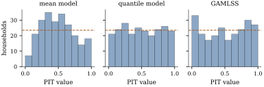

45.6 Comparing distributional models
Three fits to the same data now sit side by side: a homoscedastic linear model, a family of quantile regressions, and a location-scale GAMLSS. They estimate different things, so none can be judged by how well it hits its own target. What they share is that each delivers, at every covariate value, a predictive distribution for the response. That is the object to score.
45.6.1. Scoring rules
A scoring rule is a function
and strictly proper if equality
forces
Propriety is the minimal honesty requirement: under a
rule that is not proper a forecaster does better by
misreporting, and a comparison of methods rewards
whoever misreports most skilfully. Three consistent
scoring functions have already appeared: squared error
for the mean, the check loss for the
For a distribution function
(a)
Hence the CRPS is a strictly proper scoring rule on the distributions with finite mean.
(b) If
the CRPS is the check loss averaged over all levels.
(c) If
Proof.
(a) The integrand of Eq. 45.6.2 is bounded by one and vanishes outside the region where
(b) Write
(c) For continuous
Part (b) is the bridge between the two halves of this chapter. A quantile regression fitted at a dense grid of levels gives a predictive quantile function, evaluated by Eq. 45.6.4 with exactly the loss it was fitted with; a GAMLSS gives a predictive distribution function, evaluated by Eq. 45.6.2. The same number, in the units of the response, is available for both.
Remark (Other proper rules). The
logarithmic score
45.6.2. Calibration and sharpness
Part (c) gives the standard graphical check. Compute
For a discrete response
Warning (In-sample calibration proves
nothing). The transforms must be computed out
of sample. A fitted model is calibrated on its own
training data almost by construction: Proposition 35.4.2
showed that in a logistic regression with an intercept
the recalibration slope is exactly one and the intercept
exactly zero, whatever the model’s merits. A
location-scale fit that has just matched
Calibration alone is not enough either: the unconditional distribution of the response is perfectly calibrated and useless. The principle of Gneiting, Balabdaoui and Raftery (2007) is to maximize sharpness subject to calibration — among predictive distributions that pass the check, prefer the most concentrated. A proper scoring rule does both at once, which is why the scores come first.
45.6.3. Three models, one comparison
The
(i) the homoscedastic linear model of Part II, with normal errors and one
(ii) quantile regressions at
(iii) the location-scale GAMLSS of Example (Mean and scale together).
All three are scored the same way, by the discretized form of Eq. 45.6.4 over that grid of levels, so no model is helped by a formula the others do not get.
| model | CRPS | pinball |
pinball |
pinball |
below |
below |
|---|---|---|---|---|---|---|
| mean model | 59.34 | 20.41 | 38.98 | 21.76 | 0.030 | 0.923 |
| quantile model | 53.00 | 17.69 | 38.05 | 14.93 | 0.089 | 0.902 |
| GAMLSS | 53.12 | 16.26 | 37.53 | 16.49 | 0.140 | 0.885 |
Scores are in francs, and each model gets its own
best predictive distribution: for the mean model the
exact
The Kolmogorov–Smirnov distance of the held-out
transforms from uniformity is

import numpy as np
from scipy import stats
LEVELS = np.arange(1, 200) / 200.0 # the tau grid the CRPS integral uses
def check_loss(u, tau):
"""The check function of Section 45.2."""
return u * (tau - (u < 0))
def crps_from_quantiles(q, y):
"""CRPS = 2 * integral of the check loss over tau, on the grid LEVELS.
q has one row per observation and one column per level of LEVELS.
"""
return 2 * np.mean(check_loss(y[:, None] - q, LEVELS[None, :]), axis=1)
def pit_from_quantiles(q, y):
"""The probability integral transform read off a set of fitted quantiles."""
return np.mean(q <= y[:, None], axis=1)
# one household: a normal predictive with mean 600 and scale 120 francs, observed at 700
q_one = 600.0 + 120.0 * stats.norm.ppf(LEVELS)[None, :]
y_one = np.array([700.0])
print(f"CRPS {crps_from_quantiles(q_one, y_one)[0]:.2f} francs,"
f" PIT {pit_from_quantiles(q_one, y_one)[0]:.3f}")45.6.4. Reading a score difference honestly
Three cautions close the comparison, the same three
that have followed every model comparison in this book.
A difference needs a standard error:
45.6.5. Exercises
A. Check your understanding
A forecaster issues
Solution.
B. Practice
Show that for
Solution. For
Prove the identity used in Exercise (B1):
Solution. The key is
C. Going deeper
Interpret the two terms of Eq. 45.6.3. Show
that the second depends only on the truth